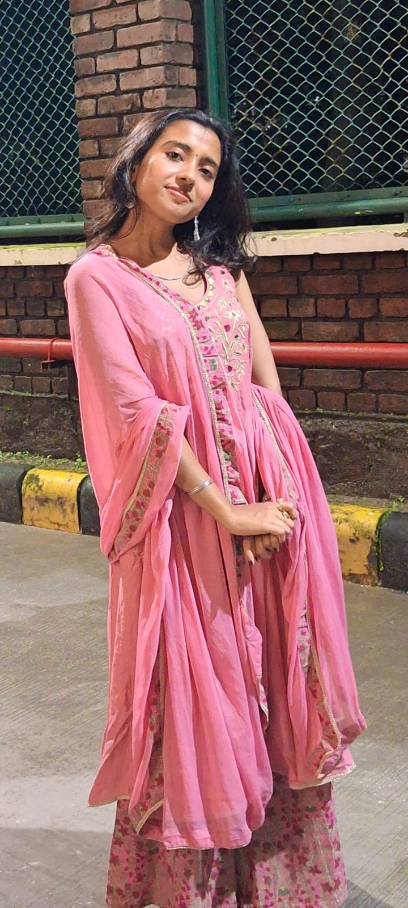
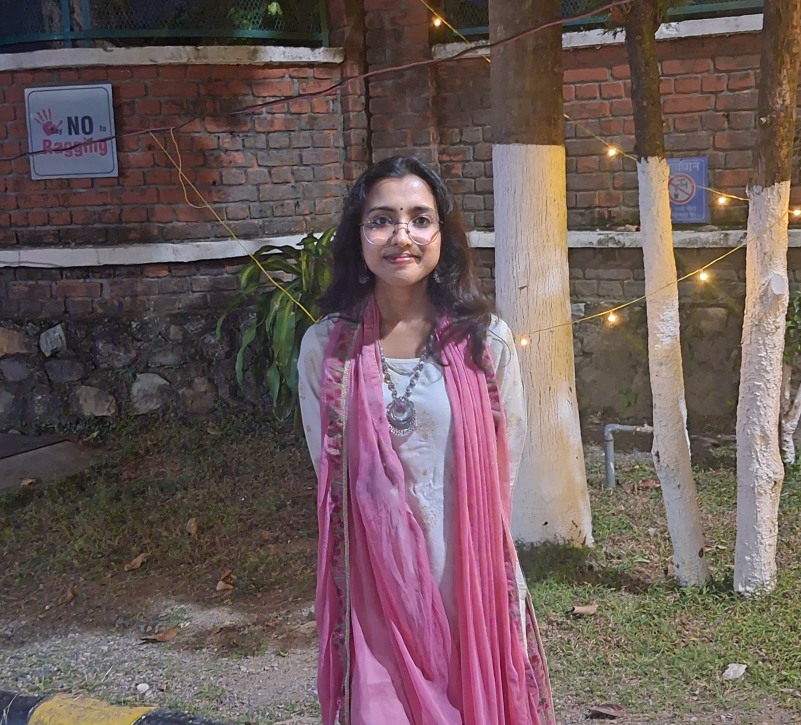
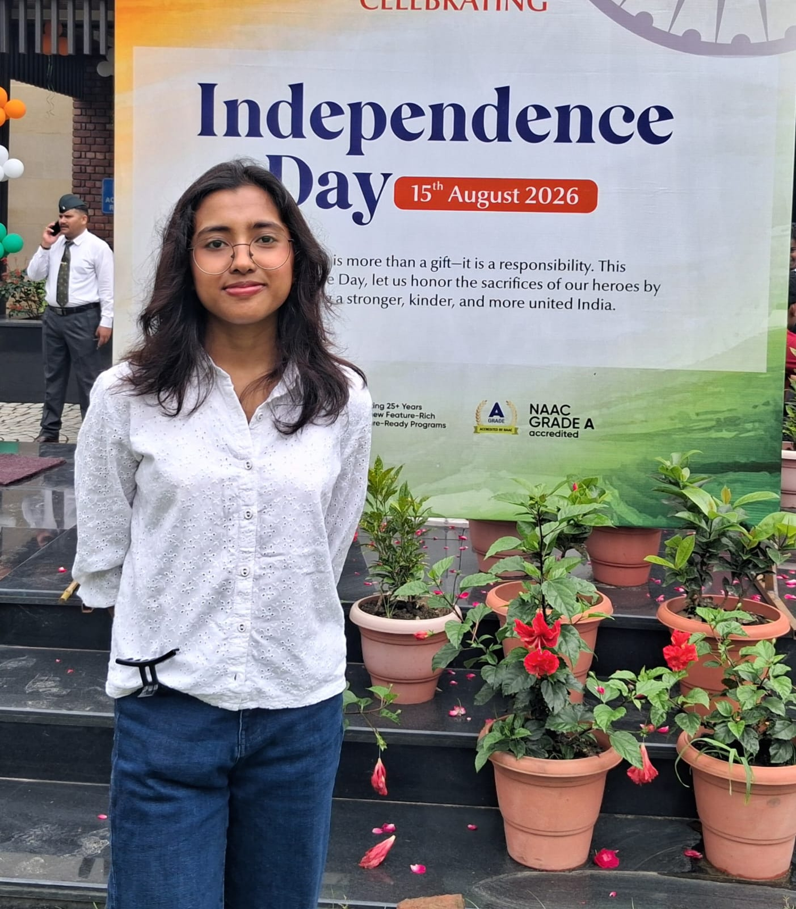

DebolinaTapadar
writer · creator · ai/ml student
a little about me
stories, thoughts & everyday magic


sharing my everyday moments, favorite finds, beautiful secrets & everything in between
a little about me
stories, thoughts & everyday magic

